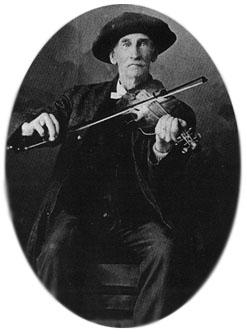
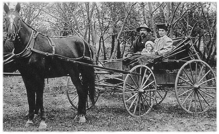
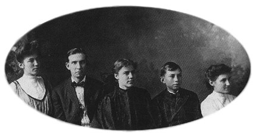
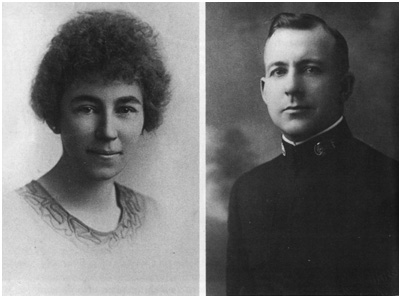
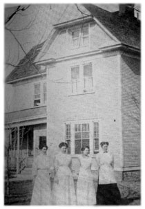
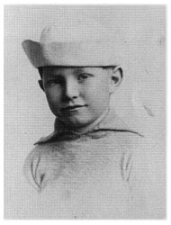

Chapter 1
A Dubious Prodigy
According to the colourful yarn spun for the benefit of his followers, L. Ron Hubbard was descended on his mother's side from a French nobleman, one Count de Loupe, who took part in the Norman invasion of England in 1066; on his father's side, the Hubbards were English settlers who had arrived in America in the nineteenth century. It was altogether a distinguished naval family: both his maternal great-grandfather, 'Captain' I. C. DeWolfe, and his grandfather, 'Captain' Lafayette Waterbury, 'helped make American naval history',[1] while his father was 'Commander' Harry Ross Hubbard, US Navy.
As his father was away at sea for lengthy periods, the story goes, little Ron grew up on his wealthy grandfather's enormous cattle ranch in Montana, said to cover a quarter of the state [approximately 35,000 square miles!]. His picturesque friends were frontiersmen, cowboys and an Indian medicine man. 'L. Ron Hubbard found the life of a young rancher very enjoyable. Long days were spent riding, breaking broncos, hunting coyote and taking his first steps as an explorer. For it was in Montana that he had his first encounter with another culture the Blackfoot [Pikuni] Indians. He became a blood brother of the Pikuni and was later to write about them in his first published novel, Buckskin Brigades. When he was ten years old, in 1921, he rejoined his family. His father, alarmed at his apparent lack of formal learning, immediately put him under intense instruction to make up for the time he had "lost" in the wilds of Montana. So it was that by the time he was twelve years old, L. Ron Hubbard had already read a goodly number of the world's greatest classics - and his interest in religion and philosophy was born.'[2]
 (Scientology's account of the years 1911-21.)
(Scientology's account of the years 1911-21.)
Virtually none of this is true. The real story of L. Ron Hubbard's early life is considerably more prosaic and begins not on a cattle ranch but in a succession of rented apartments necessarily modest since his father was a struggling white-collar clerk drifting from job to job. His grandfather was neither a distinguished sea captain nor a wealthy
_______________
1. Oregon Journal, 22 Apr 1943
2. Mission Into Time, L. Ron Hubbard, 1973
rancher but a small-time veterinarian who supplemented his income renting out horses and buggies from a livery barn. It is true, however, that his name was Lafayette O. Waterbury.
As far as anyone knew, the Waterburys came from the Catskills, the dark-forested mountain range in New York State celebrated in the early nineteenth century as the setting for Washington Irving's popular short story about Rip Van Winkle - a character only marginally more fantastic than the Waterburys' most famous scion.
 (The Hubbards' and Waterburys' travels, 1860 to 1922.)
(The Hubbards' and Waterburys' travels, 1860 to 1922.)
|
 |
| Abram Waterbury, L. Ron Hubbard's great-grandfather, playing the fiddle carved with a negro's head that became part of the family legend. |
Lafayette, undoubtedly thankful to be known to his friends as Lafe, learned the veterinary trade from his father and married before he was twenty. His bride was twenty-one-year-old Ida Corinne DeWolfe, from Hampshire, Illinois. Diminutive in stature, Ida was a gentle, intelligent, strong-willed young woman whose mother had died in childbirth, with her eighth child, when Ida was sixteen. John DeWolf, her father, was a wealthy banker who clung to a fanciful family legend about the origins of the DeWolfes in Europe. Details and dates were vague, but the essence of the story was that a courtier accompanying a prince on a hunting expedition in France had somehow saved his master from an attack by a wolf; in gratitude the prince had ennobled the faithful courtier, bestowing upon him the title of Count de Loupe, a name that was eventually anglicized to DeWolfe. [No records exist to support this story, either in Britain or France; Vice-Admiral Harry De Wolf, twelfth-generation descendant of Balthazar De Wolf, the first De Wolf in America, says he has never heard of Count de Loupe.[3]]
DeWolfe offered the young couple the use of a farm he owned in Nebraska on condition that Lafe would maintain and improve the property. It was at Burnett, a settlement on the Elkhorn river, one hundred miles west of Omaha, which had recently been opened up by the arrival of the Sioux City and Pacific Railroad.
Burnett was an unremarkable cluster of log cabins, dug-outs and ramshackle pine huts huddled in a lazy curve of the river and surrounded by gently rolling prairie. It might never have appeared on any map had not the homesteaders persuaded the railroad to make a halt nearby. The first train arrived in 1879 and thereafter the town developed around the railroad depot rather than the river; within a
_______________
3. Letter to author, 25 May 1986
few years a general store, saloon and livery stable were in business. The Davis House Hotel, opened in 1884, was considered the finest on the whole Fremont, Elkhorn and Missouri Valley Railroad.
By the time Lafe and Ida Waterbury arrived in Burnett, soon after the opening of the hotel, Ida was heavy with child; a daughter, Ledora May, was born in 1885. During the next twenty years Ida would produce seven more children and selflessly devote herself to the upbringing of a happy, close and high-spirited family.
|
 |
| Ron's grandfather was supposed to have owned a quarter of the state of Montana. Here he is seen as he really was, a struggling veterinarian, pictured with his wife and their first child (Ron's mother) at Tilden, Nebraska, around the late 1880s. |
For a couple of years Lafe worked his father-in-law's farm, but a bitter family row developed when DeWolfe indicated his intention to exclude his other children and leave the property solely to Ida and Lafe. Rather than be the cause of strife in the family, Lafe moved out, opened a livery stable in town on Second Street and established himself as a veterinarian. His business was a success because he was well-liked and respected in the area, particularly after playing a starring role in a local domestic drama which briefly held the town gossips in thrall. Ida's sister, who had also moved to Burnett, woke up one morning to discover that her husband had left her and taken their infant son with him to New York. Lafe immediately packed his bags, set off for New York by train, tracked down the erring husband and returned to Burnett in triumph, his nephew in his arms.
When Ida gave birth to another daughter in 1886, it was a typically warm-hearted gesture that prompted them to name the baby Toilie. A young man who used to hang around the livery stable had been engaged to a girl called Toilie before he became mentally deranged; whenever he felt 'strange' he would always, for some reason, seek out Lafe and find reassurance from his company. When he learned that Ida and Lafe had had another daughter, he shyly asked if they would call her Toilie, after the sweetheart he knew he would never be able to marry. Years later the irreverent Toilie would say 'I'm nuts because I was named by a crazy man' and shriek with laughter.
Toilie was still a baby when hard times hit Burnett. In January 1887 a catastrophic blizzard swept across the plains west of the Mississippi, killing thousands of head of cattle; most of the local ranchers were mined overnight. The farmers fared no better, for that terrible winter was followed by a succession of blistering summers accompanied by plagues of grasshoppers which devastated the already sparse crops. But at a point when many of the despairing townsfolk were talking about giving up the struggle against the unforgiving elements, the climate suddenly improved and the detested grasshoppers disappeared; unlike many small towns in the Nebraska prairie, Burnett survived the crisis.
By 1899 the local newspaper, the Burnett Citizen, was able to report, as evidence of increasing prosperity, that Lafe Waterbury was
among those who had built new dwelling houses in the town that year. It was a fine, two-storey, wood-frame house on Elm Street, sheltered at the front by two huge elm trees. At the rear, beyond a stand of willows, it overlooked prairie stretching away into hazy infinity; deer and antelope often ventured within sight of the back yard and at night the howls of coyotes made the children shiver in their beds.
|
 |
|
The Waterbury family photographed in their home town of Helena, Montana.
Ledora May Waterbury, Ron's mother (left), with an unidentified relative, her sisters Toilie and Midgie and brother Ray. |
The Waterburys certainly needed the space offered by their new home, for by now May and Toilie had been joined by Ida Irene (called Midgie by the family because she was so small), a brother Ray, and two more sisters, Louise and Hope. Another two girls, Margaret and June, would follow in 1903 and 1905. Lafe and Ida doted on their children, thoroughly enjoyed their company and liked nothing more than when the house was full of noise and laughter. Ida was determined that her children would have a happier upbringing than her own - she never forgot being constantly beaten at school for writing with her left hand - and as a consequence the Waterburys were unusually relaxed parents for their time, encouraging their offspring to attend church on Sundays, for example, but caring little which church they attended. Surprisingly, there was considerable choice. For a small town with a population of less than a thousand people, Burnett was an excessively God-fearing community and supported four thriving churches - Baptist, Lutheran, Methodist and Catholic.
Lafe and Ida always claimed they were too busy to go to church themselves, although Lafe openly declared, to his children, his ambivalence towards religion: 'Some of the finest men I have ever known were preachers,' he liked to say, 'and some of the biggest hypocrites I have ever known were preachers.' He was a large, bluff man with an irrepressible sense of humour, a talent for mimicry and a hint of the showman about him: he often used to announce his intention to put all his children on the stage. In the evenings, when he had had a drink or two, he would sit on the porch and play his fiddle, which had a negro's head carved at the end of the shaft.
Tutored by Lafe, who was considered to be one of the best horsemen in Madison County, all the children learned to ride almost as soon as they could walk and each of them was allocated a pony from the Waterbury livery stable. Also quartered with the horses was the family cow, Star, who obligingly provided them every day with as much milk as they could drink.
In 1902, because of confusion with a similarly-named town nearby, the good folk of Burnett decided to change the name of their town to Tilden, thereby commemorating an unsuccessful presidential candidate, Samuel J. Tilden, who had contested the 1876 election won by Rutherford B. Hayes. May was the first of the Waterbury children to graduate, in 1904, from Tilden High School. Tall, outspoken and
independent, she was an unashamed feminist - she was outraged when she read in the newspaper that a policeman in New York had arrested a woman for smoking in the street and thrilled to learn that deaf and blind Helen Keller had graduated from Radcliffe College the same year she graduated from Tilden. It surprised no one in the family when May announced that she wanted a career, declaring her belief that there must be more to life than caring for a husband and bearing children. Accordingly, and with the blessing of her parents, she set off for Omaha to train as a teacher. But by the time she had qualified as a high school and institute teacher, certificate of Nebraska, she was writing letters home about a young sailor she had met called 'Hub'.
|
 |
| Ledora May Hubbard, Ron's long-suffering mother, and her husband Harry Ross Hubbard, Ron's father, in the dress uniform of a US Navy officer. Ron remembered his mother sometimes with affection, sometimes with deep dislike; his father found that promotion eluded him and debtors pursued him. |
Harry Ross Hubbard was not a descendent of a long line of Hubbards but an orphan. Born Henry August Wilson on 31 August 1886 at Fayette, Iowa, his mother had died when he was a baby and he had been adopted by a Mr and Mrs James Hubbard, farmers in Frederiksburg, Iowa, who changed his name to Harry Ross Hubbard.
At school, Harry was not a high flier. He briefly attended a business college at Norma Springs, Iowa, but dropped out when he realized he had little chance of a degree. On 1 September 1904, the day after his eighteenth birthday, he joined the United States Navy as an enlisted man. While serving as a yeoman on the USS Pennsylvania, he began writing 'romantic tales' of Navy life for newspapers back home, earning useful extra income. He was posted to the US Navy recruiting office in Omaha in 1906 when he met May Waterbury and it was not long before her plans for an independent career were more or less forgotten. They married on 25 April 1909, and by the summer of 1910 May was pregnant; her husband, now discharged from the Navy, had found work as a commercial teller in the advertising department of the Omaha World Herald newspaper.
The Waterburys, meanwhile, had left Tilden and moved to Durant in south-east Oklahoma, close to the border with Texas. Lafe had seen the first Model T. Ford trundle cautiously through the main street of Tilden and realized that his livery stable faced an uncertain future; when a close friend in Durant suggested to him that the warmer climate in the south would be better for all the family, he talked it over with Ida and they decided to go, making the eight hundred-mile trip by railroad. Ray, then sixteen, travelled with Star and the horses and fed and watered the animals during the journey.
Only Toilie stayed behind in Tilden. She was twenty-three and working as a nurse and secretary for Dr Stuart Campbell, who had opened a small hospital in a wood-frame house on Oak Street, just a block away from the Waterbury family home. Toilie was reluctant to give up her job and her parents readily accepted her decision not to go with them to Oklahoma.
Campbell, who had set up a practice in Tilden in 1900, had delivered Ida Waterbury's two youngest children, but it was the fact that Toilie was working for him that persuaded May to return to Tilden to give birth to her first child. With only a little more than a year between them, May and Toilie had always been close, walking to and from school arm in arm, sharing a bedroom and incessantly giggling together over childhood secrets.
Toilie was waiting at the railroad depot in Tilden at the end of February 1911 when May, helped by a solicitous Hub, heaved herself down from the train. Although Tilden was still no more than four dirt streets running north to south, intersected by four more running east-west, May noticed plenty of changes in the short time she had been away - four grain elevators had been built, three saloons and two pool halls had opened, Mrs Mayes was competing with the Botsford sisters in the millinery trade and there was even a new 'opera house' - true, it had yet to stage its first opera, but the road shows were always popular, particularly since Alexander's Ragtime Band had set the nation's feet tapping.
|
 |
| The hospital in Tilden, Nebraska, where L. Ron Hubbard was born in 1911. His aunt Toilie, who worked in the hospital, is second from the right. |
Ida and Lafe Waterbury did not see their first grandchild until Christmas 1911, when Hub, May and the baby arrived to spend the holiday with them in Durant. Lafe, who had been out treating a neighbour's horse, burst into the house, threw his hat on the floor and leaned over the crib to shake his grandson's hand. Baby Ron smiled obligingly and Lafe whooped with pleasure, trumpeting at his wife: 'Look, the little son of a bitch knows me already.'
The biggest surprise for the family was that Ron had a startling thatch of fluffy orange hair. Hub was dark-haired and the Waterburys had no more than a hint of auburn in their colouring - nothing like the impish little carrot-top who gurgled happily as he was passed from one lap to another. Seven-year-old Margaret, known in the family as Marnie, spoke for everyone when she proclaimed her new nephew to be 'cute as a bug's ear'.
During that Christmas May told her parents that Hub had got a new job on a newspaper in Kalispell, Montana, and that they would be moving there from Omaha in the New Year. She was hopeful that it would prove to be a step up for them.
In the spring of 1912, May began writing long and enthusiastic
letters from Kalispell. Perhaps missing the family, she often hinted that they might consider joining her and Hub in Montana. Kalispell was a fine, modern city, she wrote, with paved streets, electric lighting and many fine houses. The surrounding Flathead Valley was famous for its fruit and at blossom time the orchards of apples, peaches, pears, cherries and plums had to be seen to be believed. One Kalispell farmer, Fred Whiteside, was so confident about the quality of his fruit that he boasted he would give $1000 to anyone finding a worm in one of his apples.
May's letters gave her parents much to think about, for they both recognized that the move to Oklahoma had not been a success. When they first arrived in Durant, Lafe bought a livery barn on the outskirts of town and for several months the whole family lived in the hayloft above the animals. They built a cookhouse on the property so they had somewhere to eat their meals and then started on a house.
None of the children minded the privations in the least - indeed, they rather enjoyed thinking of themselves as true pioneers - but Lafe found the humid summers very debilitating. It made May's description of the blossom in Montana all the more enticing.
Ida had been deeply disturbed by an incident that occurred soon after they moved into their new house. A negro raped a white woman in the town and while a posse was out looking for him, a rumour took hold that there was going to be a negro uprising, causing something approaching panic, particularly in remote outlying areas. At nightfall. Lafe and Ray took guns and went out on horses to protect the approaches to their property, while the girls waited behind barred windows, watching flares bounce through the night and listening to the rattle of cartwheels as farmers shepherded their families into the safety of the town.
Although there was no uprising, both Ida and Lafe were concerned that there might be a 'next time' and they did not want to feel that their safety depended on their willingness to protect themselves with guns. In the fall of 1912, the Waterburys once again sold their house, packed up their belongings and loaded their livestock on to railcars, this time bound for Kalispell, Montana, 1500 miles to the north-west. Long delays at railheads, while waiting with their freight cars to be picked up by north-bound trains, added days to the journey and it was a week before they were hooked on to a Great Northern Railway train labouring across the Rocky Mountains through the spectacular passes that led to Kalispell.
The family reunion was the happiest of occasions and no one received more attention than Ron, who had learned to take his first faltering steps. 'He was very much the love child of the whole family,' said Marnie. 'He was adored by everyone. I can still see that mop of red hair running around.'
Lafe found a small house in Orchard Park, a short walk from May and Hub's home and only a block from the fairground, where he hoped to find work as a veterinarian. With only two bedrooms, it was not nearly big enough for the Waterbury tribe, but it had a barn that would accommodate all the horses and still leave enough room for the long-suffering and widely-travelled Star. Marnie and June, the two youngest children, were given one of the bedrooms and Lafe built a big wood-frame tent in the yard for the other four: inside, it was divided by a canvas screen - Ray slept on a bunk on one side and Midgie, Louise and Hope were on the other. They had a stove to keep them warm in the winter and were perfectly content. On summer evenings, Marnie and June often heard their older sisters whispering and tittering in the tent and sometimes they crept outside to join them and share the cherries they stole almost every night from a neighbouring garden.
The Waterburys were happy in Kalispell: Ida and Lafe made no secret of the pleasure they took in being able to see their grandson every day; Midgie met her future husband, Bob, in the town; and Ray developed an impressive talent for training horses. Under his careful tuition, the family ponies learned tricks like counting by pawing the ground with a hoof and stealing handkerchiefs from his pocket. The Waterbury 'show horses', ridden by the Waterbury children, became a popular feature in the town parades and they always competed in the races at the fairground.
|
 |
| Little Ron in a sailor hat. One day he would be the self-appointed commodore of his own private navy. |
Lafe was walking down Kalispell's main street one day with Marnie and Ron when he bumped into Samuel Stewart, the governor of Montana, whom he had met several times. 'Hey Sam,' he said, 'I'd like you to meet my little grandson, Ron.' Stewart stooped, solemnly shook hands with the boy and stood chatting to Lafe for a few minutes. After he had gone, Marnie, who had been neither introduced nor acknowledged, turned furiously on her father and snapped, 'Why didn't you introduce me? Don't I matter?' Lafe had the grace to apologize, but Marnie could see by his broad grin that he was not in the least repentant.
As well as being favoured so shamelessly, Ron could always count on the support of his many aunts in any family dispute. While he was learning to talk, he would frequently drive his mother to distraction by running round the house repeating the same, usually meaningless,
word over and over again. One afternoon at the Waterbury home, the word was 'eskobiddle'. May, at the end of her patience, finally shouted at him: 'If you say that once more I'm going to go and wash your mouth out with soap.'
Ron looked coolly at her and smiled slowly. 'Eskobiddle!' he yelled at the top of his voice. May immediately dragged him off and carried out her threat. A few minutes later, Ida heard shrieks coming from the back yard and discovered Midgie and Louise holding May down and washing her mouth with soap to avenge their precious nephew.
Less than twelve months after the Waterburys arrived in Kalispell, May broke the news that she and Hub were going to move on; Hub was having problems with his job on the newspaper and had been offered a position as resident manager of the Family Theater in the state capital, Helena. Ida and Lafe were naturally upset but, as May said, Helena was only two hundred miles away and it was also on the Great Northern Railroad, so they would be able to visit each other frequently.
Nevertheless, it would not be the same, both doting grandparents gloomily concluded, as having little Ronald in and out of the house almost every day.
Helena in 1913 was a pleasant city of Victorian brick and stone buildings encircled by the Rocky Mountains, whose snow-dusted peaks stippled with pines provided a scenic backdrop in every direction. The Capital Building, with its massive copper dome and fluted doric columns, eloquently proclaimed its status as the first city of Montana, as did the construction of the neo-Gothic St Helena Cathedral, which was nearing completion on Warren Street. Electric streetcars clanked along the brick-paved main street, once a twisting mountain defile known as Last Chance Gulch in commemoration of the four prospectors who had unexpectedly struck gold there in 1864 and subsequently rounded the city.
The Family Theater, at 21 Last Chance Gulch, occupied part of a handsome red-brick terrace with an ornate stone coping, but it suffered somewhat from its position, since it was in the heart of the city's red-light district and could not have been more inappropriately named. Respectable families arriving for the evening performance were required to avert their eyes from the colourful ladies leaning out of the windows of the brothels on each side of the theater, although it was not unknown for the occasional father to slip out after the show had started and return before the final curtain, curiously flushed.
Harry Hubbard's duties were to sell tickets during the day, collect them at the door as patrons arrived, maintain order if necessary during the show and lock up at the end of the evening. Although his title was
resident manager, he chose not to live at the theater and rented a rickety little wooden house, not much better than a shack, on Henry Street, on the far side of the railroad track. May hated it and soon found a small apartment on the top floor of a house at 15 Rodney Street, closer to the theater and in a better part of town.
Travelling road shows, sometimes comprising not much more than a singer, pianist and a comedian, were the staple fare of the Family Theater. Ron was often allowed to see the show and he would sit with his mother in the darkened auditorium completely enthralled, no matter what the act. Years later he would recall sitting in a box at the age of two wearing his father's hat and applauding with such enthusiasm that the audience began cheering him rather than the cast. He claimed the players took twelve curtain calls before they realized what was happening.[4]
When the Waterburys paid a visit to Helena, Hub arranged for them to see the show, made sure they had the best seats in the house and solemnly stood at the door of the theater to collect their tickets as they filed in. Not long after their return to Kalispell, May heard that her father had slipped on a banana skin, fallen and broken his arm. She did not worry overmuch at first, even when her mother wrote to say that the arm had not been set properly and had had to be re-broken. Indeed, her worries were rather closer to home, for Harry had been told by the owner of the Family Theater that unless the audiences improved the theater might have to close.
The news from abroad was also giving cause for concern, despite Woodrow Wilson's promise to keep America out of the war threatening to engulf Europe. On Sunday 2 August 1914, headlines in the Helena Independent announced that Germany had declared war on Russia and a despatch from London confirmed: 'The die is cast . . . Europe is to be plunged into a general war.' Closer to home, rival unions in the copper mines at Butte, only sixty miles from Helena, were also at war. When the Miners' Union Hall was dynamited, Governor Stewart declared martial law and sent in the National Guard to keep order.
It was in this turbulent climate that the Family Theater finally closed its doors, for the audiences did not pick up. Harry Hubbard was once again obliged to look for work, but once again he was lucky - he was taken on as a book-keeper for the Ives-Smith Coal Company, 'dealers in Original Bear Creek, Roundup, Acme and Belt Coal', at 41 West Sixth Avenue. May, meanwhile, found a cheaper apartment for the family on the first floor of a shingled wood-frame house at 1109 Fifth Avenue.
Back in Kalispell, Lafe Waterbury was still having trouble with his arm. He was not the kind of man to complain about bad luck, but no
_______________
4. 1938 biography of L. Ron Hubbard by Arthur J. Burks, president of American Fiction Guild
one could have blamed him had he done so. His arm had to be set a third time and just when it seemed it was beginning to heal he was thrown to the ground by a horse he was examining. He was never to regain full strength in that arm and although he was only fifty years old he knew he would not be able to continue working as a vet, with all the pulling and pushing it involved. Only the four youngest Waterbury girls were still at home, but Lafe did not think he could afford to retire, even if that had been his ambition. (His taxable assets were listed in the Kalispell City Directory at $1550, which made him comfortably off, but not by any means rich.) No prospects presented themselves immediately in Kalispell and Lafe and Ida began considering another move. It somehow seemed natural, since they had followed May to Kalispell, that they should now think about moving to Helena.
In the summer of 1915, Toilie, back home on a visit from the East, drove her father to Helena in the family's Model T. Ford so that he could take a look around. They stayed, of course, with May and Hub in their cramped apartment on Fifth Avenue and Lafe was delighted to have the company of his four-year-old grandson every time he went for a walk in town.
Hub presumably talked to his father-in-law about his job and the two men almost certainly discussed the ever-increasing demand for coal and the business opportunities available in Helena. As a bookkeeper, Hub knew the figures, knew the profit Ives-Smith was making and knew the strength of the market - it was information that undoubtedly influenced Lafe's decision to move his family to Helena and set up a coal company of his own.
The Waterburys arrived in 1916 and bought a house at 736 Fifth Avenue, on the corner of Raleigh Street, just two blocks from May and Hub's apartment. Lafe considered himself very lucky to get the property, for it was a sturdy two-storey house, built around the turn of the century, with light and airy rooms, fine stained glass windows, a wide covered porch and an unusual conical roof over a curved bay at one corner. It would quickly become known by everyone in the family, with the greatest affection, as 'the old brick'.
The Waterbury girls had wept bitterly on leaving Kalispell, largely because their father had insisted that Bird, the Indian pony on which they had all learned to ride, was too old to make the journey and would have to be left behind. But their spirits soon lifted as they ran excitedly from room to room in their new home and imagined themselves as fashionable young ladies of substance.
Fifth Avenue was not yet a paved road, but it was lined with struggling saplings which offered the promise of respectability and, more importantly, it was straddled to the east by the Capital Building,
a monumental edifice of such grandeur that the girls were all deeply awed by its proximity. To the west, Fifth Avenue appeared to plunge directly into the forested green flanks of Mount Helena and just two blocks south of 'the old brick', Raleigh Street ended in grassy hummocks which led up to the mountains and promised limitless opportunities for play. Marnie, then thirteen years old, could hardly imagine a better place to be.
Lafe rented a yard with a stable adjoining the Northern Pacific railroad track where it crossed Montana Avenue and put up a sign announcing that the Capital City Coal Company had opened for business. It was very much a family affair, as listed in the Helena City Directory for 1917: Lafayette O. Waterbury was president, Ray was vice-president and Toilie (recalled from the East by her father - 'It's time to come home,' he told her, 'I need you.') was secretary-treasurer. Harry Ross Hubbard had also joined the fledgling enterprise, but the only vacancy was in the lowly capacity of teamster.
On 2 January 1917 Ron was enrolled at the kindergarten at Central School on Warren Street, just across from the new cathedral which, with its twin spires and grey stone facade, towered reprovingly over the city. Most days he was walked to school by his aunts, Marnie and June, who were at Helena High, opposite Central School.
Ron, who was known to the neighbourhood kids as 'brick' because of his hair, would later claim that while still at kindergarten he used the 'lumberjack fighting' he had learned from his grandfather to deal with a gang of bullies who were terrorizing children on their way to and from the school. But one of Ron's closest childhood friends, Andrew Richardson, has no recollection of him protecting local children from bullies. 'He never protected nobody,' said Richardson. 'It was all bullshit. Old Hubbard was the greatest con artist who ever lived.'[5]
Although the war in Europe, with its unbelievable casualty toll, was filling plenty of columns in the Independent, local news, as always, received quite as much prominence as despatches from foreign correspondents. Suffragettes figured prominently in many of the headlines and after the women's suffrage amendment was narrowly approved in the Montana legislature, the victorious women celebrated by electing one of their leaders, Jeanette Rankin, to a seat in the US Congress. Women voters also helped push through a bill to ban the sale of alcohol as the Prohibition lobby gained ground across the nation.
Even the news, in February 1917, that Germany had declared its intention to engage in unrestricted submarine warfare did not fully hit home until the following month when it was learned that German
_______________
5. Interview with Andrew Richardson, Helena, Montana
submarines had attacked and sunk three US merchant ships in the Atlantic. On 6 April, the United States declared war on Germany; Congresswoman Rankin was one of only a handful of dissenters voting against the war resolution.
Mobilization began at once in Helena at Fort Harrison, headquarters of the 2nd Regiment, but the wave of patriotic fervour that swept the state brought in its wake a sinister backlash in the form of witchhunts for 'traitors' and 'subversives'. In August, self-styled vigilantes in Butte dragged labour leader Frank Little from his rooming house and hanged him from a railroad trestle on the edge of town. His 'crime' was that he was leader of the Industrial Workers of the World, a radical group viewed as seditious.
Although selective draft mustered more than seven thousand troops in Montana by the beginning of August, Harry Hubbard felt, as an ex-serviceman, that he should not wait to be drafted. He had served for four years in the US Navy and his country needed trained seamen. Yes, he had family responsibilities, but he was also an American. He knew his duty and May knew she could not, and should not, stop him. On 10 October, Hub kissed her goodbye, hugged his six-year-old son and left Helena for the Navy Recruiting Station at Salt Lake City, Utah, to re-enlist for a four-year term in the US Navy. Two weeks later, little Ron and his mother joined the crowds lining Last Chance Gulch to watch Montana's 163rd Infantry march out of town on their way to join the fighting in Europe. Ron thought they were just 'swell'.
After Hub had gone, May and Ron moved into 'the old brick' with the rest of the family and May found a job as a clerk with the State Bureau of Child and Animal Protection in the Capital Building. If little Ron experienced any sense of loss from the absence of his father, it was certainly alleviated by the intense warmth and sociability of the Waterbury family. He had grandparents who considered he could do no wrong, a loving mother and an assorted array of adoring aunts who liked nothing more than to spend time playing with him.
It was inevitable that he would be spoiled with all the attention, but he was also a rewarding child, exceptionally imaginative and adventurous, always filling his time with original ideas and games. 'He was very quick, always coming up with ideas no one else had thought of,' said Marnie. 'He'd grab a couple of beer bottles and use them as binoculars or he would write little plays and draw the scenery and everything. Whatever he started he finished: when he made up his mind he was going to do something, you could be sure he would see it through.'
Hub wrote home frequently and made it clear that he was enjoying being back in the service, the war notwithstanding. He had been selected for training as an Assistant Paymaster and if he made the
grade, he proudly explained in a letter to May, it would mean that he would become an officer. On 13 October 1918 Harry Ross Hubbard was honorably discharged from enlisted service in the US Navy Reserve Force and the following day he was appointed Assistant Paymaster with the rank of Ensign. He was thirty-two years old, positively geriatric for an Ensign - but it was one of the proudest moments of his life.
Eleven days later, the front pages of the Helena Independent was dominated by a single word in letters three inches high: PEACE. Underneath, the sub-heading declared, 'Cowardly Kaiser and Son Flee to Holland.' The terms of surrender were to be so severe, the newspaper innocently reported, that Germany would forever 'be absolutely deprived from further military power of action on land and sea and in the air'.
Unlike most wives whose husbands had gone to war, May knew that the Armistice did not mean that Hub would be coming home; he had already told her that he intended to make a career in the Navy. It was a decision she could not sensibly oppose, for she was obliged to admit that he had been incapable of making progress in his varied civilian jobs and he was clearly happier in the Navy. Furthermore, his position with the Capital City Coal Company was far from secure, for she knew that her father was worried about the business - they were having difficulty finding sufficient supplies of coal from Roundup and a third coal company had opened up in town, increasing competition. The Waterbury girls were helping with the company's cash flow problems by knocking on doors round and about Fifth Avenue to collect payment for overdue bills.
Lafe Waterbury never allowed his business worries to cast a shadow over his family life and for the children, Ron included, weeks and months passed with not much to fret about other than whether or not the taffy [toffee] would set. 'Taffy-pulls' were a regular ritual in the Waterbury household: a coat hanger was kept permanently on the back of the door in the basement to loop the sugar and water mix and stretch it repeatedly, filling the taffy with air bubbles so that it would snap satisfactorily when it was set. Liberty Bill would always sit and watch the proceedings with saliva dripping from his jaws. Once he grabbed a mouthful when the taffy looped too close to the floor and disappeared under a bush ill the garden for hours while he tried to suck it out of his teeth.
One day Marnie and June were in the basement pulling taffy with Ron when they heard their father laughing out loud in the front room. They ran upstairs to see what was going on and found him standing at the window, both hands clutched to his quivering midriff, tears streaming down his cheeks. Outside, a young lady, in a tight hobble
skirt - the very latest fashion in Helena - was attempting to step down from the wooden sidewalk to cross the road. To her acute embarrassment, she was discovering that while it was feasible to totter along a level surface, it was almost impossible to negotiate a step of more than a few inches without hoisting her skirt to a level well beyond the bounds of decorum, or jumping with both feet together. Eventually, shuffling to the edge of the sidewalk, she managed to slide first one foot down, then, with a precarious swivel, the other. By this time Lafe was forced to sit down, for he could no longer stand, and the entire family had gathered at the window.
Laughter was an omnipresent feature of life in 'the old brick'. When Toilie brought home a bottle of wine and gave her mother a glass, the unaccustomed alcohol thickened her tongue and the more she struggled with ever more recalcitrant syllables, the more her daughters howled. Then there was the time when Lafe leaned back in his swivel chair, overbalanced, fell under a shelf piled with magazines and hit his head as he tried to get up - no one would ever forget that. On the other hand almost the worst incident any of the children could remember was the day when their mother's pet canary escaped through an open window into the snow and never returned. Ida had loved that canary when she was lying in bed she would whistle and it would fly over, perch on the covers and pick her teeth.
In the summer, the children spent every waking hour after school outdoors. May, who had changed her job and now worked as a clerk in the State Department of Agriculture and Publicity, bought a small plot of land in the foothills of the mountains, about two hours' walk from the family home and paid a local carpenter to put up a raw pine shack. It had just two rooms inside, with a long covered porch at the front. They called it 'The Old Homestead' and used it at weekends and holidays, taking enough food and drink with them to last the duration, and drawing water from a well on a nearby property. Most times Lafe would drive them out in the Model T. and drop them on the Butte road at the closest point to the house, from where they walked across the fields. The children loved The Old Homestead for the simple pleasure of being in the mountains, playing endless games under a perfect blue sky, optimistically panning for gold in tumbling streams of crystal clear water, picking great bunches of wild flowers, cooking on a campfire and huddling round an oil lamp at night, telling spooky stories.
When they were not planning a trip to The Old Homestead, Ron pestered his aunts to take him on a hike up to the top of Mount Helena, where they would sit with a picnic, munching sandwiches and silently staring out over the sprawl of the city below and the ring of mountains beyond. One of the trails up the mountain passed a smoky
cave said to be haunted by the men who had used it as a hideout while being stalked by Indians in the mid-nineteenth century. Marnie used to take Ron, squirming with thrilled terror, into the cave to look for ghosts.
Marnie and Ron, with only eight years between them, were as close as brother and sister. When she was in a school play at Helena High, taking the part of Marie Antoinette, he sat wide-eyed throughout the performance then ran all the way home to tell his grandma how beautiful Marnie was.
While the children remained blithely unaware of events outside the comforting confines of 'the old brick' and The Old Homestead, few adults in Montana were able to enjoy such a blinkered existence. After years of abundant crops and high wheat prices, postwar depression brought about a collapse in the market - bushel prices halved in the space of three months - and the summer of 1919 saw the first of a cycle of disastrous droughts. Every day brought further ominous tidings of mortgage foreclosures, banks closing, abandoned farms turned into dustbowls and thousands of settlers leaving the state to seek a livelihood elsewhere.
In this gloomy economic climate, Lafe Waterbury was forced to close down the Capital City Coal Company. For a while he tinkered with a small business selling automobile spares and vulcanizing tyres, but the depression meant that motorists were laying up their cars rather than repairing them and Lafe decided to retire, thankful that he still had sufficient capital left to support his family.
May helped with the household expenses, although she realized she and Ron would not be able to stay there forever. Hub had been promoted to Lieutenant (Junior Grade) in November 1919, and whenever he could, had been coming home on leave to see his wife and son. He was still intent on a career in the Navy, although he had already suffered some setbacks. He had been obliged to appear before a court of inquiry in May, 1920, while serving as Supply Officer on the USS Aroostock, to explain a deficiency in his accounts of $942.25. He also had an unfortunate tendency to overlook personal debts. No less than fourteen creditors in Kalispell claimed he left behind unpaid bills totalling $125; Fred Fisch, high-grade clothier of Vallejo, California, was pursuing him for $10 still owed on a uniform overcoat; and a Dr McPherson of San Diego was owed $30. All of them complained to the Navy Department, casting a shadow over Hubbard's record.[6] He had a long spell of inactive duty at the beginning of 1921 while he was waiting for a new posting and he and May spent a great deal of time discussing their future. Hub expected May to conform, like other Navy wives, and trail around the country with him from posting to posting; when he was at sea, he wanted her to be close to his ship's
_______________
6. Harry Ross Hubbard navy record
home port. May obviously wanted to be with Hub, but she was reluctant to move Ron from school to school and loath to leave her family. She had perhaps secretly hoped that Hub would tire of the Navy and return to civilian life in Helena, but the depression wiped out whatever miserable opportunities he might have had of finding work and she realized it would never happen. In September 1921, Hub was posted to the battleship USS Oklahoma as an Assistant Supply Officer. He anticipated serving on board for at least two years, much of that time at sea, and the opportunities for visits home to Helena would be severely curtailed. As a loyal wife, May felt she could no longer justify staying in Helena. She and Ron packed their bags, bade the family a tearful farewell and caught a train for San Diego, the USS Oklahoma's home port.
Although Ron must have missed the convivial domesticity of 'the old brick', he did not appear to mind, in the least, being a 'Navy brat' - the curiously affectionate label applied to all children of servicemen, many of whom needed more than the fingers of both hands to count their schools. He was a gregarious boy, quick to make friends, and starting a new school held no terrors for him. After about a year in San Diego, the Hubbards moved north to Seattle, in Washington State, when the Oklahoma was transferred to Puget Sound Navy Shipyard.
(Scientology's account of the years 1922-24.)
In Seattle Ron joined the boy scouts, an event that would figure prominently in a hand-written journal which he scrawled on the pages of an old accounts book, interspersed with short stories, a few years later: 'The year Nineteen Hundred and Twenty-Three rallied round and found me contentedly resting on my laurels, a first class badge. For I was a boy scout then and deaf was my friend that hadn't heard all about it. I considered Seattle the best town on the map as far as scouting was concerned.'
In October 1923, Lieutenant Hubbard completed sea duty on the USS Oklahoma and, after brief spells of temporary duty in San Francisco and New York, was assigned for further training to the Bureau of Supply and Accounts School of Application in Washington DC. The US Navy, which clearly despised any form of land transport, saved itself the cost of two long-distance train fares by giving May and Ron berths on the USS U.S. Grant, a German warship acquired by the US Navy after the First World War, which was due to sail from Seattle to Hampton Roads, Virginia, via the Panama Canal. It was thus December, and the snow was thick on the ground, before the Hubbards were re-united in Washington after a voyage of some seven thousand miles, three-quarters of the way round the coast of the United States. It was on this trip, it seems, that Ron met the enigmatic Commander 'Snake' Thompson of the US Navy Medical Corps, a psychoanalyst he
would later claim was responsible for awakening his youthful interest in Freud, although he only made the briefest mention of the journey in his journal. His style of writing was fluent, breezy, schoolboyishly cocksure and addressed directly to the reader. 'If obviously pushed upon,' he wrote, 'I supposed I could write a couple of thousands [sic] words on that trip . . . But I spare you.'
He usually referred to himself in a gently ironic tone, perhaps to avoid giving an impression of thinking rather too highly of himself. When he arrived in Washington, two troops of local scouts were battling for a prized scouting trophy, the Washington Post Cup. Troop 100, he noted, belonged to the YMCA 'and would therefore probably lose', so he joined the other outfit, Troop 10, 'which must have sighed loudly when it perceived me crossing the threshold'.
The journal also contained flashes of humour, delivered deadpan: 'Visualize me in a natty scout suit, my red hair tumbling out from under my hat, doing my good turn daily. Once I saved a man's life. I could have pushed him under a streetcar but I didn't.'
Intent on pushing Troop 10 to victory, Ron began acquiring merit badges with extraordinary speed and dedication. In his first two weeks, he was awarded badges for Firemanship and Personal Health, quickly followed by Photography, Life-Saving, Physical Development and Bird Study. He determinedly thrust his way into the front rank of the Washington scouts (it was absolutely not his nature to languish shyly among the pack) and he was chosen to represent them on a delegation to the White House to ask President Calvin Coolidge to accept the honorary chairmanship of National Boys' Week. He noted the invitation in his journal with characteristic cheek: 'One fine day the Scout executive telephoned my house and told me I was to meet the president that afternoon. I told him I thought it pretty swell of the president to come way out to my house . . .'
Brushed and scrubbed ('even the backs of my hands were thoroughly washed') he waited with forty other boys outside the Oval Office until a secretary emerged and said the president was ready to receive them. ' With fear and trembling, we entered and repeated our names a few times as we pumped Cal's listless hand . . . I think I have the distinction of being the only boy scout in America who has made the President wince.' The great man spoke in such lugubrious tones that Ron compared the occasion to being invited to his own hanging.
In the boy scout diary he kept intermittently around this time, Ron was a lot less forthcoming than in the journal, which was clearly written with an intention to entertain. The most frequent entry in his diary was a laconic 'Was bored.' Yet he would claim in later years that the four months he spent in Washington was a crucial period of his life during which he received 'an extensive education in the field of the
human mind' under the tutelage of his friend Commander Thompson.[7] He also noted - in his journal - that he became a close friend of President Coolidge's son, Calvin Junior, whose early death accelerated his 'precocious interest in the mind and spirit of Man.'[8]
|
Although Miller implies there was no such person as 'Snake' Thompson, he did
in fact exist. William Sims Bainbridge, the eminent sociologist and author of
several papers on Scientology, reports this vignette of the man:
"Snake Thompson was the best friend of my great uncle, Con (Consuelo Seoane). Together, around 1911, they spent nearly two years as American spies inside the Japanese Empire, charting possible invasion routes and counting all the Japanese fortifications and naval guns. It was an official but top secret joint Army-Navy spy expedition, with Con representing the Army, and Snake, the Navy. They pretended to be South African naturalists studying Japanese reptiles and amphibians, and Con was constantly worried that Snake had a camera hidden in his creel, which would get them shot if the Japanese checked too closely. Thompson habitually wore a green scarf fastened with a gold pin in the shape of a snake." (private email, quoted by Rob Clark, in article <336000c9.122495268@news.mindspring.com> posted to alt.religion.scientology on 25 Apr 1997) -- Dean Benjamin |
[Ron would often refer to Thompson in later life, yet the Commander remains an enigma. He cannot be identified from US Navy records, nor can his relationship with Freud be established. Doctor Kurt Eissler, one of the world's leading authorities on Freud, says he has no knowledge of any correspondence or contact of any kind between Freud and Thompson.[9]]
Presumably the hours that Ron and Thompson spent closeted together in the Library of Congress were somehow dovetailed into the time he devoted to scouting, for on 28 March 1924, a few days after his thirteenth birthday, Ron was made an eagle scout.
'Twenty-one merit badges in ninety days,' he recorded triumphantly in his journal. 'I was quite a boy then. Written up in the papers and all that. Take a look at me. You didn't know the wreck in front of you was once the youngest Eagle Scout in the country, did you?'
Neither did Ron. At that time the Boy Scouts of America only kept an alphabetical record of eagle scouts, with no reference to their ages.[10]
_______________
7. Facts About L. Ron Hubbard - Things You Should Know, Flag Divisional Directive, 8 Mar 1974
8. Mission Into Time, L. Ron Hubbard, 1973
9. Letter to author, 25 Mar 1986. Also US Govt Memorandum, 16 Nov 1966.
10. Letter to author, 1 Feb 1986